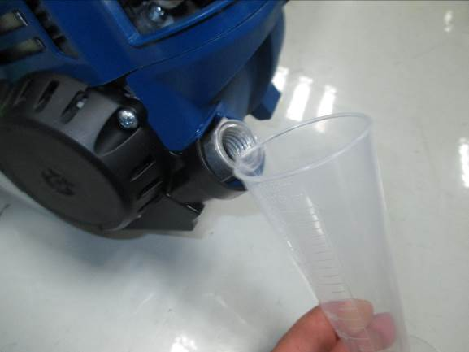

ADDING/CHECKING ENGINE LUBRICANT
NOTICE:
1.Attempting to start the engine before it has been properly filled with lubricant will result in equipment failure.
2.Engine lubricant has a major influence on engine performance and service life. This unit is shipped without engine lubricant.
3. Always use a 4-cycle engine lubricant that meets or exceeds the requirements for API service classification SJ. SAE 30, 10W30, or 10W40 are all acceptable lubricants to use in this product. Non-detergent or 2-stroke engine lubricants will damage the engine and should not be used.
4.Check lubricant level before each use.
To add engine lubricant: Inital use
1.Remove the cap from the empty lubricant bottle provided.
2.Pour 60ml 4-cycle engine lubricant oil into lubricant bottle with paper funnel.
3.Unscrew the oil cap from the eninge and remove.
4.Pour the 60 ml lubricant oil into oil fill hole. Replace and secure the oil cap.
To check engine lubricant level before each use:
1. Separate the attahment from the power head.
2. Set power head on a flat level surface with shaft parallel to surface.
3.Unscrew the oil cap and remove.
4.Lubricant level should fall within the top of oil fill hole(the top of screw thread).
5.If level is low, add engine lubricant until the fluid level rises to the top of oil fill hole( the top of screw thread) and does not overfill.
6.Replace and secure the oil cap.
NOTICE:
Do not overfill. Overfilling the crankcase may cause excessive smoke, oil loss, and engine damage.
